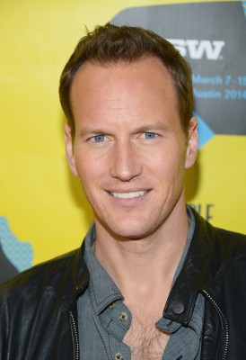
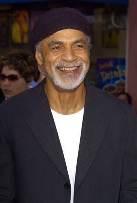
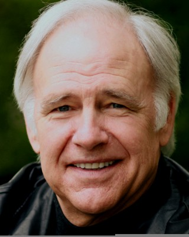
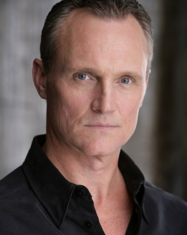
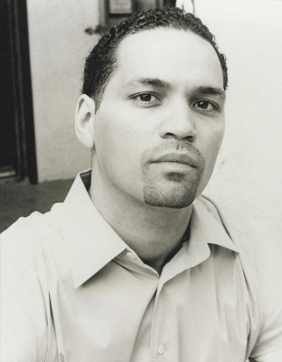
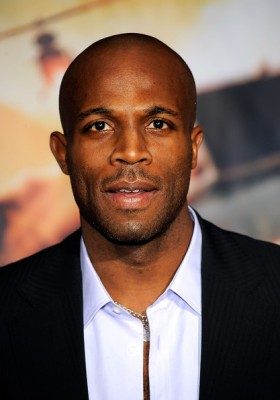
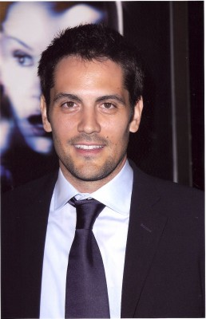

#12 Lakeview Terrace


 IMDB-Wertung: 6.1 / 10
IMDB-Wertung: 6.1 / 10  Metascore: 47
Metascore: 47 
Das Ehepaar Chris und Lisa Mattson sind frisch verheiratet und in ihr Traumhaus eingezogen. Doch das Glück währt nicht lang, denn auf Grund ihrer verschiedenen Hautfarben geraten die beiden ins Fadenkreuz ihrer konservativen Nachbarn. Abel Turner, ein strenger, alleinerziehender Vater und Polizist, ist selbst erklärter Wachhund der Nachbarschaft. Durch seine regelmäßigen Streifzüge gibt er den Leuten die nötige Sicherheit, doch aufgrund seiner Schikanen gegen die Mattsons entwickelt sich der Polizist immer mehr zum Dorn im Auge des Paares. Diese beschließen schließlich, den Kampf aufzunehmen.
Jahr: 2008
Dauer: 110 Minuten
FSK: 12
Land: USA Studio: Screen GemsTonspuren:
Untertitel:
Auflösung: 720p (1280×528) Größe: 4474 MB
Genre: Krimi, Drama, Thriller
Regisseur: Neil LaBute
Drehbuch: David Loughery, Howard Korder, David Loughery
Soundtrack: Jeff Danna, Mychael Danna
Darsteller:
 Samuel L. Jackson als Abel Turner
Samuel L. Jackson als Abel Turner-  Patrick Wilson als Chris Mattson
 Kerry Washington als Lisa Mattson
Kerry Washington als Lisa Mattson-  Ron Glass als Harold Perreau
- Justin Chambers als Donnie Eaton
- Jay Hernandez als Javier Villareal
- Regine Nehy als Celia Turner
- Jaishon Fisher als Marcus Turner
-  Robert Pine als Captain Wentworth
- Keith Loneker als Clarence Darlington
- Caleeb Pinkett als Damon Richards
- Robert Dahey als Jung Lee Pak
- Ho-Jung als Sang Hee Pak
 Valeri Ross als Old Woman
Valeri Ross als Old Woman- Dartenea Bryant als Woman
- Bitsie Tulloch als Nadine
- Dale Godboldo als Dale
- Lynn Chen als Eden
-  Wiley M. Pickett als First Officer
-  Vincent Laresca als Second Officer
- Paul Terrell Clayton als Officer #1
- Jeff Cockey als Officer #2
- Wrenna Monet als Stripper #1
- Tabitha Taylor als Stripper #2
- Cassius M. Willis als Black Cop
- Vanessa Bell Calloway als Aunt Dorrie
- Cocoa Brown als Bartender
- Zorianna Kit als TV Reporter
- Hiep Thi Le als Nurse
- Ajay Mehta als Doctor
-  Billy Brown als Patrolman
- Sarah Lieving als Emergency Technician
- Eva LaRue als Lt. Morgada
- Lisa Dewitt als Cop #4
-  Michael Landes als Lt. Bronson
- Mark Alexander Herz als Off Duty Cop , uncredited
- Gabreon Womack als Javier Villareal's Son , uncredited
- Dallas Raines als TV Weatherman
- Michael Sean Tighe als Manager
- Khira Thomas als Stripper #3
- Marc Chaiet als Neighbor
- Lonnie Moore als Bachelor
- Jamie Vandevert als Sheriff Deputy
- Cornelia Brown als Office Employee , uncredited
- Eva Loseth als Check Out Girl , uncredited
Datei: X:\2008(G-M)\Lakeview Terrace (2008, FSK12, 1280x528).mkv seit 15.01.2015
Festplatte: HD 2008(G-Z)-2009(A-F)
 Es gibt insgesamt 73 Filme in der Gruppe '2008(G-M)'
Es gibt insgesamt 73 Filme in der Gruppe '2008(G-M)'